Work with Git Submodules in MATLAB
Git™ submodules enable you to incorporate and manage external repositories within your main repository. Submodules also help you keep commits and changes in a repository separate from the main repository. By organizing your work into components, you can facilitate component reuse, team development, unit testing, and independent release of components.
Consider using Git submodules if:
You maintain a library that you and other teams use in multiple codebases or projects.
You develop a codebase that depends on a snapshot of a third-party library. You depend on independently developed external code that has its own version control history that you want to preserve.
Git submodules isolate changes to external dependencies from the main codebase or project, making it easier to track and manage their changes separately.
Submodules allow you to control which version of an external dependency or library your codebase uses.
Submodules provide a convenient way to rollback changes in external dependencies.
Note
If you use external codes without modifying them in your codebase, and if you use a package manager for your dependencies and their versioning, you do not need to use submodules.
You want to integrate separate components or libraries from other teams with your larger codebase or project.
When setting up continuous integration and deployment pipelines for your codebase, submodules help organize and isolate tests and builds for different parts of the code hierarchy. This action minimizes the overall test and build time that your main project requires on a daily basis.
Your codebase or project has extensive non-code assets that do not change frequently, such as large datasets or documentation. Submodules help keep the assets separate from the main codebase.
You integrate legacy code into a new codebase or project. Submodules help keep the legacy codebase separate while still being accessible from the main codebase.
Tip
If you are using MATLAB® projects, you can use Git submodules to populate a referenced project. Using referenced projects enables you to manage the MATLAB search path and access project tools such as Project Checks, Project Upgrade, and Dependency Analyzer. For more information, see Organize Projects into Components Using References and Git Submodules (Simulink).
Understand Git Repository and Submodules Hierarchy
Git submodules are repositories nested inside your main Git repository. The main repository points to a specific revision of the external repository defined as a submodule.
Here is an example repository hierarchy with three submodules. The main repository
has a direct dependency on the two sumodules submodule1 and
submodule2. The submodule submodule2 has a
dependency on the submodule submodule3.
mainRepo/
├── .gitmodules
├── .git/
├── submodule1/
│ └── .git
├── submodule2/
│ └── .gitmodules
│ └── .git
│ └── submodule3/
│ └── .git
└── src/
└── main.cWhen you first explore a Git repository, follow these steps to investigate its dependencies on other repositories using the Branch Manager.
Open the Branch Manager for the main repository. Navigate to the main repository folder. Then, right-click the white space in the Files or Project panel, and select Source Control > Branch Manager.
Alternatively, in the Source Control panel, click the Branch Manager button
 . If the Source Control icon is not in the sidebar,
click the Open more panels button
. If the Source Control icon is not in the sidebar,
click the Open more panels button  and select the Source Control
panel.
and select the Source Control
panel.In the left pane of the Branch Manager, in the Submodules section, inspect the list of the direct submodule dependencies that the main repository declares.
In this figure, the main repository has direct dependencies on two submodules.
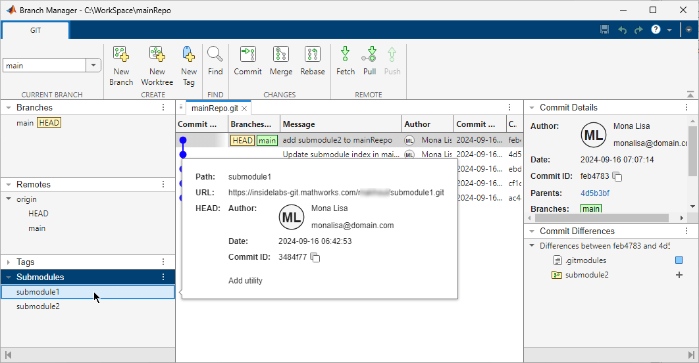
To get the details of a submodule, click the submodule. A pop-out box opens and lists the submodule path, URL, and the
HEADcommit.Branch Manager also shows the
Indexcommit if it is different from theHEADcommit. If theHEADand Index commits are different, to use the latest changes in a submodule, consider updating the submodule definition in the main repository to point to the latest commit. For more information, see Modify Files in Submodule or Update Submodules.To investigate indirect dependencies, from the Branch Manager of the main repository, open the Branch Manager for the submodules. Right-click a submodule and select Open Branch Manager.
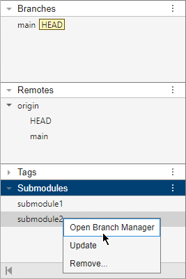
In this figure,
submodule2has a direct dependency onsubmodule3. The main repository has an indirect dependency onsubmodule3.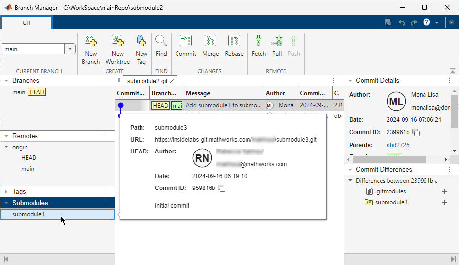
Tip
If you are using MATLAB projects, and your submodules are referenced projects, you can use the Project Hierarchy view in the Dependency Analyzer to visualize the dependencies between your projects and submodules in the hierarchy.
Add Git Submodules to Repository
To reuse code from another repository, clone it as a Git submodule.
Open the Branch Manager of the main repository. Navigate to the main repository folder. Then, right-click the white space in the Files or Project panel, and select Source Control > Branch Manager.
Alternatively, in the Source Control panel, click the Branch Manager button
. If the Source Control icon is not in the sidebar,
click the Open more panels button and select the Source Control
panel.In the left pane of the Branch Manager, in the Submodules section, click the Submodules actions button and select Add Submodule.
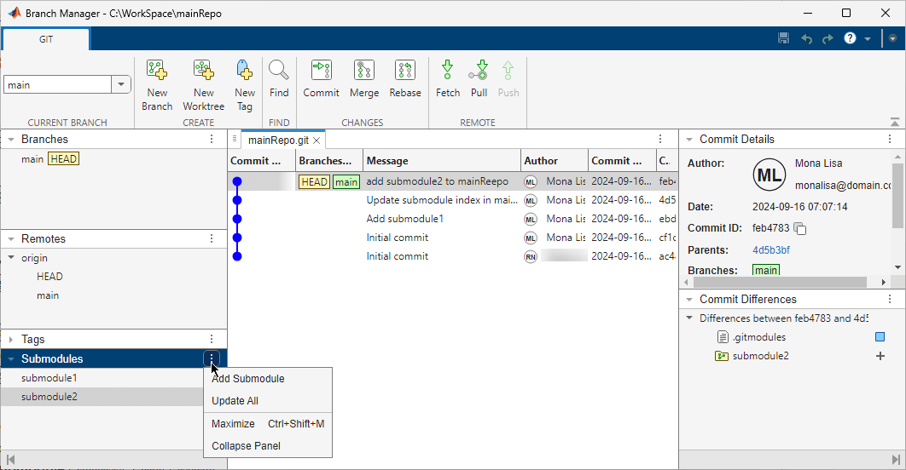
In the Add Submodule dialog box, in the Path field, specify the folder path inside the main repository to clone the submodule into.
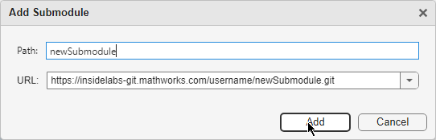
In the URL text box, specify the URL of the remote repository that hosts the submodule.
Click Add.
MATLAB clones the submodule into the folder you specified in the Path text box. The main repository now points to the commit of the submodule specified by HEAD.
In the Source Control panel, in the main repository, you can see the
.gitmodulesfile and the submodule root folder in the Modified Files section.Save the submodule definition by committing your changes. In the Source Control panel, in the main repository, click Commit.
To make the new dependency link available to other users, push the changes to the remote of the main repository. In the Source Control panel, in the main repository, click Push from the More source control action button .
Modify Files in Submodule
If you contribute to the development of a submodule, follow these steps to modify a submodule and push changes to the submodule remote repository.
In the Files panel, navigate to or expand the submodule folder. The submodule repository appears automatically in the Source Control panel.
If the Source Control icon is not in the sidebar, click the Open more panels button
and select the Source Control
panel.In the Source Control panel, if the submodule is in
Detached HEADstate, before committing any changes to a submodule, switch to the appropriate branch.Open the Branch Manager for the submodule repository. In the Source Control panel, in the submodule repository, click the Branch Manager button
.In the Branch Manager toolstrip, in the Current Branch section, select one of the available branches.
Make changes to files in the submodule folder. In the Source Control panel, in the submodule repository, you see the modified files in the Modified Files section.
Commit the modified files in the submodule repository. In the Source Control panel, in the submodule repository, click Commit.
This figure shows the Files and Source Control panels stacked on top of each other. The Files panel shows the main repository folder with one of the submodules root folders expanded. The Source Control panel shows the main and the submodule repositories. In the submodule repository, the Modified Files lists one modified file.
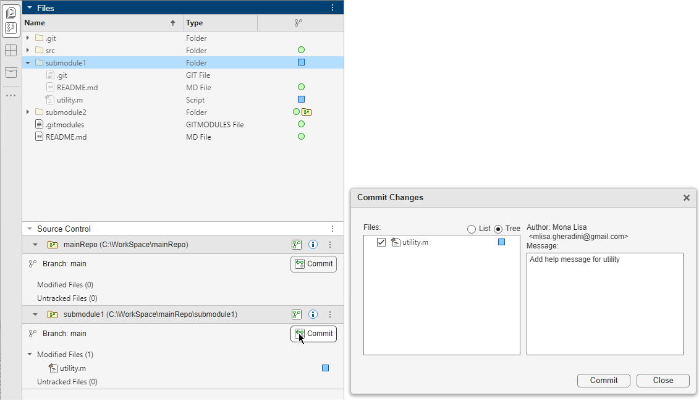
To make the changes available to other users of the submodule, push the changes to the remote submodule repository. In the Source Control panel, in the submodule repository, click Push from the More source control action button .
The main repository detects that the submodule has changes and adds the submodule root folder to the list of modified files. The main repository still points to the old submodule definition specified in Index.
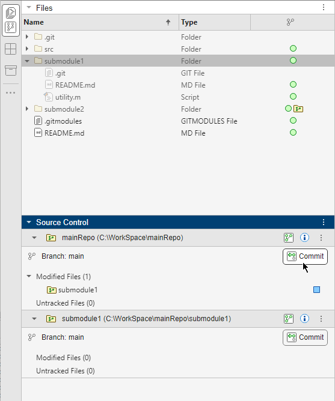
This illustration shows the Branch Manager for the main repository. The main repository points to the old commit specified in Index.
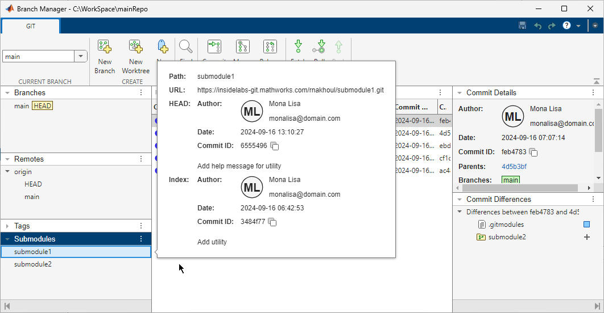
To change the main repository to point to the latest commit ID, commit and push changes to the main remote repository. In the Source Control panel, in the main repository, click Commit.
Then, click Push from the More source control action button .
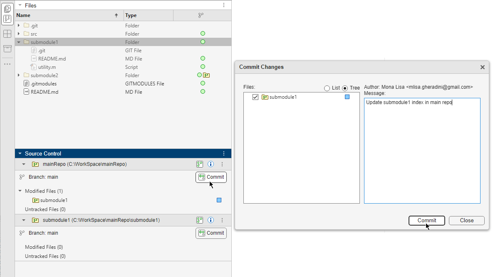
The main repository now points to the latest commit ID.
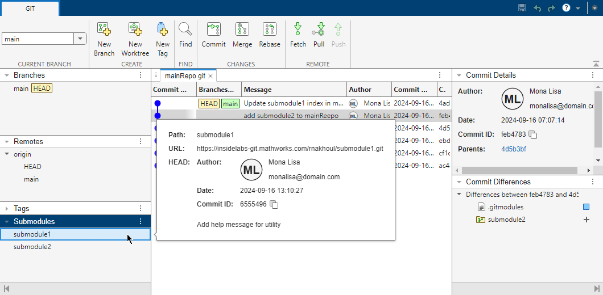
Update Submodules
Submodules are static and typically used for utilities and shared libraries.
In R2025a: Using Pull to get the latest changes in the main repository recursively updates all submodules automatically.
If you use a submodule and need to update it to the latest revision, follow these steps.
Open the Branch Manager of the main repository. Navigate to the main repository folder. Then, right-click the white space in the Files or Project panel, and select Source Control > Branch Manager.
Alternatively, in the Source Control panel, click the Branch Manager button
. If the Source Control icon is not in the sidebar,
click the Open more panels button and select the Source Control
panel.In the left pane of the Branch Manager, in the Submodules section, right-click the submodule you want to update and select Update.
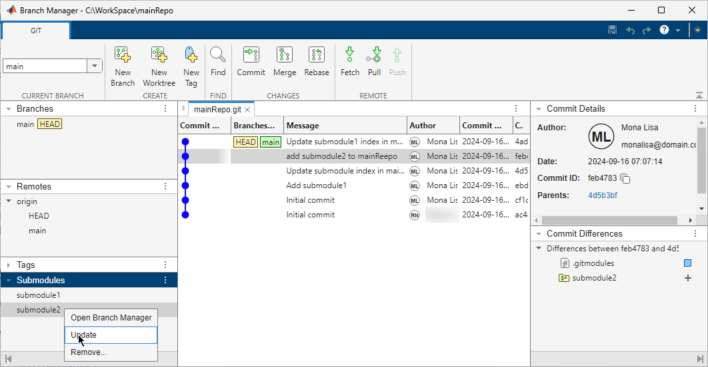
If the submodule content changed, the Source Control panel, in the main repository, you see the submodule folder in the Modified Files section.
To change the main repository to point to the latest commit ID, commit and push changes to the main remote repository. In the Source Control panel, in the main repository, click Commit.
Then, click Push from the More source control action button .
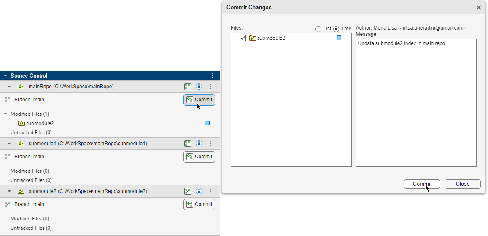
Tip
When you update a submodule, the update applies to all its submodules.